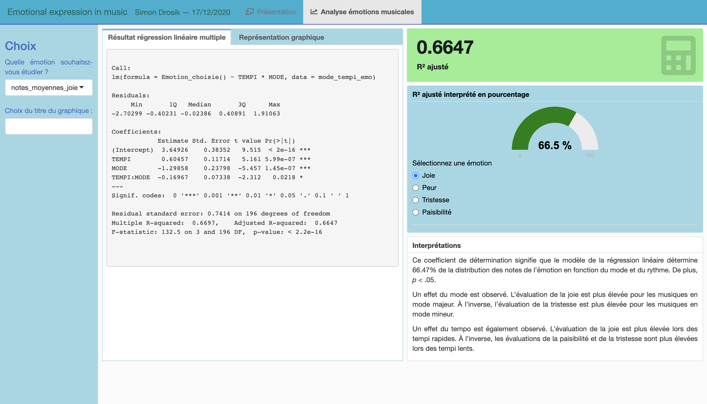
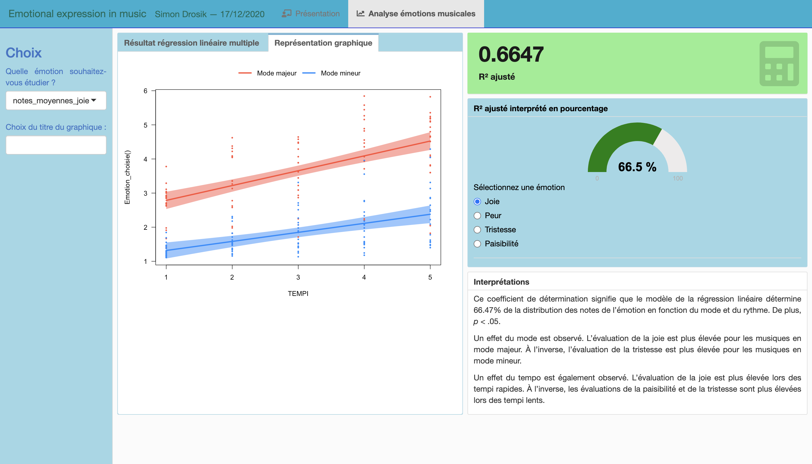
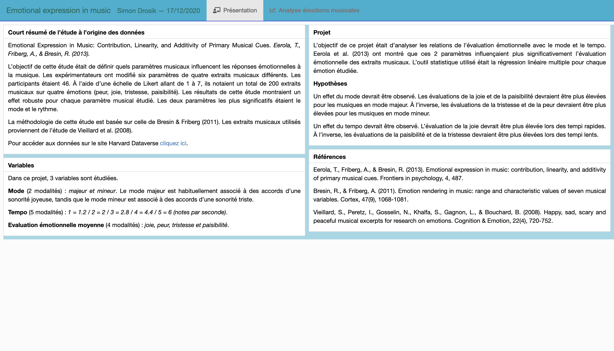

Portfolio de Simon Drosik
Dashboard
  J'ai réalisé ce dashboard grâce à RShiny. Il permet d'accéder rapidement aux résultats de régressions linéaires multiples en fonction des différentes variables de l'étude.
J'ai réalisé ce dashboard grâce à RShiny. Il permet d'accéder rapidement aux résultats de régressions linéaires multiples en fonction des différentes variables de l'étude.